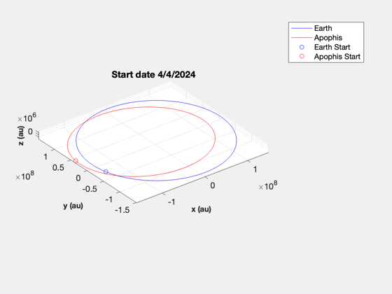
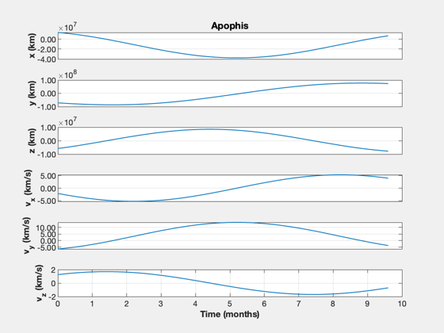
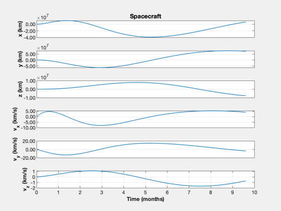
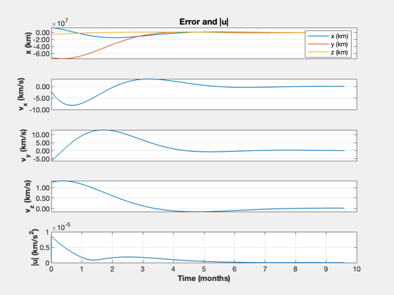

Apophis 3D optimal trajectory with a linear regulator
Starts with plotting the Earth and Apophis orbits. It then uses an optimal regulator to do the transfer with a linearized orbit.
------------------------------------------------------------------------ See also Constant, ApophisOrbit, AdjustMeanAnomaly, RVOrbGen, PlanetPosJPL, NewFig, JD2Date, ECI2Hills, OrbRate, RHSLinOrb, QCR, RK4, TimeHistory ------------------------------------------------------------------------
Contents
%-------------------------------------------------------------------------- % Copyright (c) 2023.1 Princeton Satellite Systems, Inc. % All rights reserved. %-------------------------------------------------------------------------- % Since 2023.1 %--------------------------------------------------------------------------
Constants
dayToSec = 86400;
mu = Constant('mu sun');
Generate the Earth and Apophis orbit
[elA,~,~,jDA] = ApophisOrbit; jD0 = Date2JD([2024 4 4]); el = AdjustMeanAnomaly(elA,jDA,jD0); nDays = 500; t = 0:nDays; jD = jD0 + t; [rApophis,vApophis] = RVOrbGen(elA,t*dayToSec,[],mu); PlanetPosJPL( 'initialize', 3 ); rEarth = zeros(3,length(jD)); vEarth = zeros(3,length(jD)); for k = 1:length(jD) [rEarth(:,k),~,vEarth(:,k)] = PlanetPosJPL( 'update', jD(k), 1 ); end NewFig('Apophis and Earth') plot3(rEarth(1,:),rEarth(2,:),rEarth(3,:),'b'); hold on plot3(rApophis(1,:),rApophis(2,:),rApophis(3,:),'r'); XLabelS('x (au)'); YLabelS('y (au)'); ZLabelS('z (au)'); axis image grid on rotate3d on plot3(rEarth(1,1),rEarth(2,1),rEarth(3,1),'ob'); hold on dS = JD2Date(jD0); title(sprintf('Start date %d/%d/%d',dS(2),dS(3),dS(1))); plot3(rApophis(1,1),rApophis(2,1),rApophis(3,1),'or'); hold off legend('Earth','Apophis','Earth Start', 'Apophis Start')
Use a linear quadratic regulator with a linearized orbit to simulation the trajectory
% Find Hills Coordinates for Apophis xA = RelativeOrbitState([rEarth(:,1);vEarth(:,1)],[rApophis(:,1);vApophis(:,1)]); n = OrbRate(Mag(rEarth(:,1)),Mag(rEarth(:,1)),mu); x = zeros(6,1); dT = 100; % sec nYrs = 0.8; tEnd = nYrs*365.25*dayToSec; nSim = floor(tEnd/dT); xP = zeros(13,nSim); u = zeros(3,1); % Find the optimal gains [~,a,b] = RHSLinOrb(zeros(6,1),0,n,u); % Create the linear quadratic regulator. Pick a large value for the control % weight kOpt = QCR(a,b,eye(6),eye(3)*1e26) % Check the eigenvalues DispWithTitle(eig(a-b*kOpt),'Controller Eigenvalues') % Simulate TimeDisplay( 'initialize', 'Apophis Optimal Trajectory', nSim ); for k = 1:nSim xP(:,k) = [xA;x;Mag(u)]; xA = RK4(@RHSLinOrb,xA,dT,0,n,zeros(3,1)); u = kOpt*(xA-x); x = RK4(@RHSLinOrb,x,dT,0,n,u); TimeDisplay( 'update' ); end TimeDisplay( 'close' );
kOpt = 2.0682e-13 -8.243e-14 2.8263e-29 5.6796e-07 1.0144e-07 3.424e-22 1.2805e-13 5.6615e-14 -9.9089e-29 1.0144e-07 4.2862e-07 -1.7579e-22 -3.6116e-30 3.5087e-30 6.7939e-14 -1.5511e-23 6.5709e-25 3.6862e-07 Controller Eigenvalues -2.3214e-07 + 4.0477e-07i -2.3214e-07 - 4.0477e-07i -2.6615e-07 + 2.2681e-08i -2.6615e-07 - 2.2681e-08i -1.8431e-07 + 2.7128e-07i -1.8431e-07 - 2.7128e-07i
Plot
The required control acceleration is the magnitude of u, u
yL = {'x (km)' 'y (km)' 'z (km)' 'v_x (km/s)' 'v_y (km/s)' 'v_z (km/s)'...
'|u| (km/s^2)'};
t = (0:nSim-1)*dT;
k = 1:6;
TimeHistory(t,xP(k,:),yL(1:6),'Apophis');
k = 7:12;
TimeHistory(t,xP(k,:),yL(1:6),'Spacecraft');
e = xP(1:6,:) - xP(7:12,:);
TimeHistory(t,[e;xP(13,:)],yL([1 4:7]),'Error and |u|',{[1 2 3],4,5,6,7},...
{yL(1:3),{},{},{},{}});
fprintf('Delta-V: %g km/s\n',trapz(xP(13,:))*dT)
%--------------------------------------
% $Id: ff06d4f17f188f9d49ba0d76ddcca6d16c66a30c $
Delta-V: 26.5531 km/s  